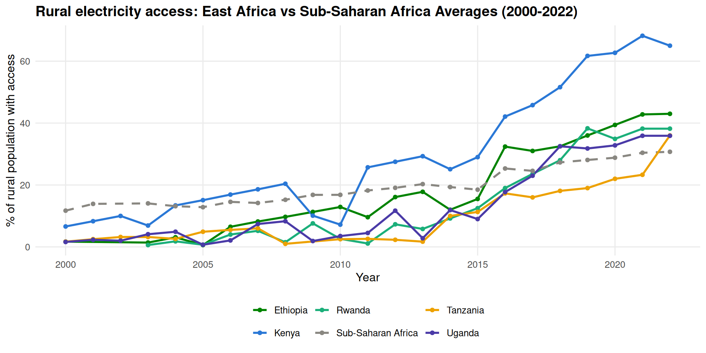
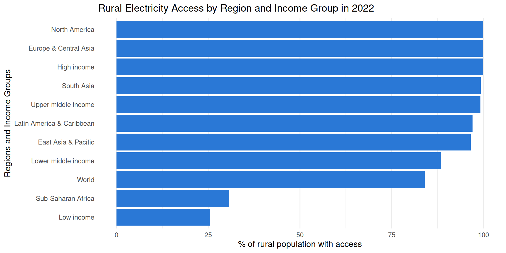

Results
To focus on the East African Region (Uganda, Kenya, Tanzania, Ethiopia and Rwanda). Rural Electrification in the region was minimal to bumpy before 2000 upto mid-2000s where we see a signifcant take-off. Uganda saw meagre rural electrification prior to 2000 with below 2% of the population having access. There we tiny increaments in access after 2000, between 2000 and 2018, there were fluctuations recorded in access, with more significant rises recorded from 2018 to 2023. Kenya went from 7% in 2000 to 65% in 2022, they enjoyed more steaper increments in access across the whole region. Tanzania has a similar case with Uganda with insignicifant increments in access till around 2012 where access started to shoot up significantly through to 2022. Ethiopia shows gradual increase in access between 2004 and 2012 before experiencing more gradient increase in access post 2014. Signficant %access increase in Rwanda is recorded post 2010 having barely had any rural access prior to 2008.
Initial Data Exploration
# A tibble: 6 × 7
`Country Name` `Country Code` `Indicator Name` `Indicator Code` ...71 year
<chr> <chr> <chr> <chr> <lgl> <int>
1 Aruba ABW Access to electric… EG.ELC.ACCS.RU.… NA 1990
2 Aruba ABW Access to electric… EG.ELC.ACCS.RU.… NA 1991
3 Aruba ABW Access to electric… EG.ELC.ACCS.RU.… NA 1992
4 Aruba ABW Access to electric… EG.ELC.ACCS.RU.… NA 1993
5 Aruba ABW Access to electric… EG.ELC.ACCS.RU.… NA 1994
6 Aruba ABW Access to electric… EG.ELC.ACCS.RU.… NA 1995
# ℹ 1 more variable: access_rural_pct <dbl>
# A tibble: 34 × 4
year mean median sd
<int> <dbl> <dbl> <dbl>
1 1990 95.0 100 16.0
2 1991 89.3 100 24.9
3 1992 84.5 100 28.8
4 1993 80.7 100 31.3
5 1994 78.8 100 32.8
6 1995 77.3 100 33.6
7 1996 75.7 100 34.6
8 1997 76.9 100 33.3
9 1998 75.4 99.5 33.8
10 1999 75.0 98.9 33.9
# ℹ 24 more rows
Rural Electrification Access in East Africa
Figure 1 is a plot of % rural electrification access in East Africa vs Sub-Saharan Africa Averages from 2000-2022. It shows how access has grown in the region over the last 22 years with a mix of bumps and gradual increase in access.

Figure 1: Rural electricity access, East Africa vs. Sub-Saharan Africa Averages, 2000-2022
Rural Electrification Access by Region and Income Group
Figure 2 shows rural electricity access by region and income group, 2022. Notably, North America, Europe and Central Asia are doing wonderfully similar to High-income countries with Sub-Saharan Africa and Low-Income countries lagging behind.

Figure 2: Rural electricity access by region and income group, 2022
Summary Statistics for Access in East Africa and Sub-Saharan Africa
Table 1 shows summary statistics for rural electrification Access in East Africa and Sub-Saharan Region, 2000 - 2022 with Kenya having the highest mean % and Maximum in the region and Tanzania statistics showing there is very slow and minimal access. The East African region is below the Sub-Saharan region averages bar Kenya.
![]()